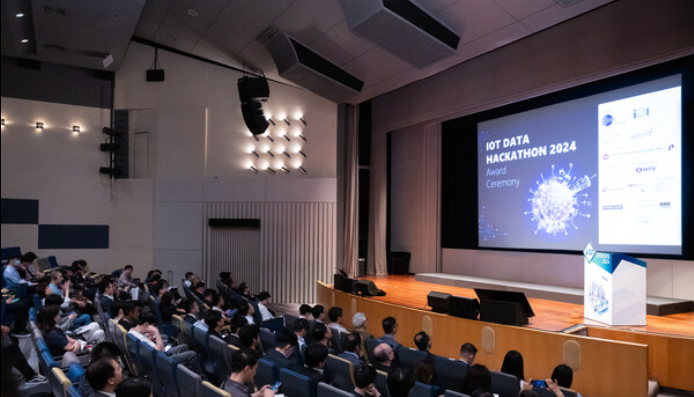
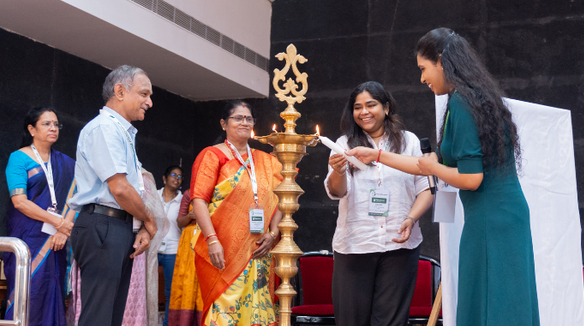
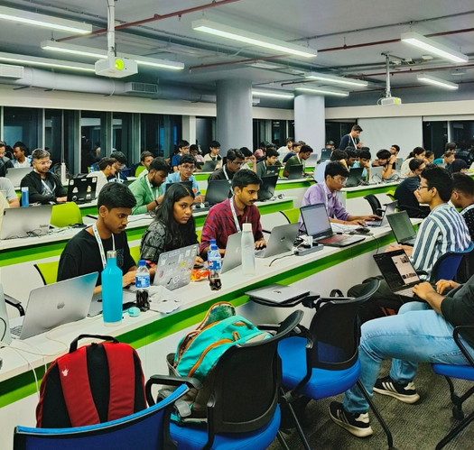
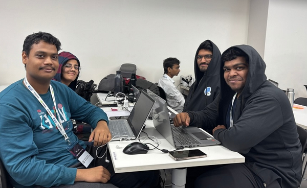
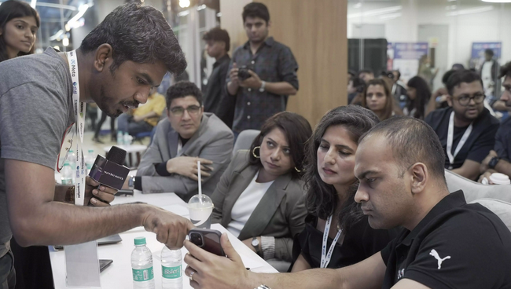
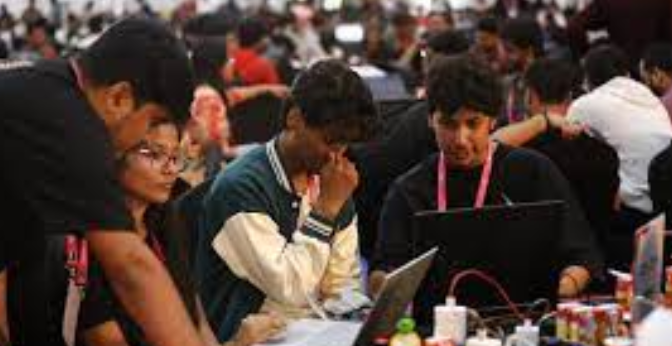
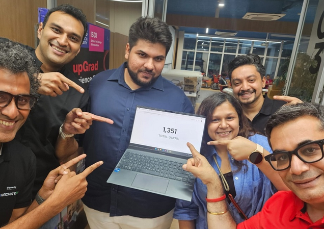
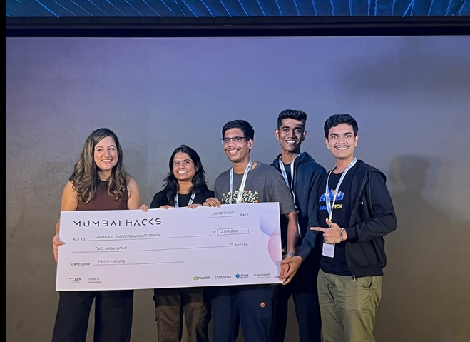
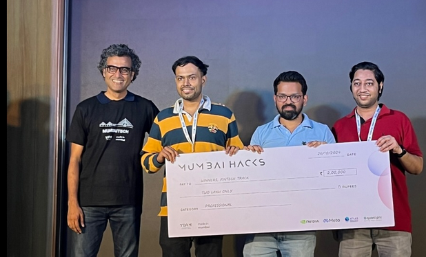

2024
Opening Ceremony
The event kicked off with an inspiring keynote, setting the stage for 48 hours of intense innovation and coding.


2024
Midnight Coding Sprint
Fueled by pizza and passion, teams worked through the night, turning ambitious ideas into functional prototypes.


2024
Mentorship Sessions
Industry experts provided invaluable guidance, helping teams refine their projects and overcome technical hurdles.


2024
Final Pitches
The top teams presented their groundbreaking projects to a panel of judges, showcasing their hard work and creativity.

2024
Award Ceremony
Celebrating the winners and all participants for their incredible effort, dedication, and the innovative solutions they built.

